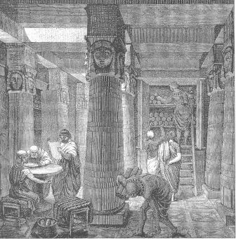

Historia
Leyendo un libro de Cesar Antonio Molina, Esperando a los años que no vuelven, descubrí un capítulo que me llamó la atención. Al llegar de visita a la casa de un escritor argentino describe las estancias del hogar y sus jardines, los objetos más llamativos; pero entre todos se queda con la biblioteca, que en este caso alberga unos tres mil o cuatro mil ejemplares. Seguramente debió haber leído todos. Hoy día aún me llama mucho la atención las fotografías que encontramos en los complementos semanales o periódicos en los que se entrevista a un literato famoso, quien a modo de lúbrica posa ante sus estanterías repletas de volúmenes antiguos y usados. Mi admiración por los libros no es menor que por las bibliotecas, por eso, en esta ocasión, he decidido dedicarle unas líneas para vosotros.
La primera biblioteca de la que se tiene constancia se situó en Caldea, región de la Baja Mesopotámia, hacia el 1700 a.C. (el Código de Hammurabi se escribió en torno al 1760 a.C.). Los textos estaban escritos en sistema cuneiforme sobre tablillas de barro, para lo que usaban un punzón o piedras perfiladas. La primera biblioteca nacional fue financiada por Asurbanipal, rey de Asiria, en Nínive en torno al siglo VII a.C.
Egipto contó con las suyas propias en Tebas y Menfis, pero la biblioteca por antonomasia en el país del Nilo fue la de Alejandría, fundada por Ptolomeo Soter en el siglo IV a.C., aunque también se dice que fue Alejandro Magno. En el siglo III a.C. ya contaba con 400.000 rollos múltiples y 90.000 únicos. Euclides y Eratóstenes estudiaron y discutieron entre sus paredes las teorías que los harían conocidos a la posteridad. Desgraciadamente, cuando César asedió la ciudad fue incendiada parcialmente, aunque su verdadero final llegaría con los disturbios de la crisis imperial en el siglo III d.C.
La biblioteca de Pérgamo también es otro símbolo del mundo antiguo. Fundada en el siglo II a.C. fue saqueada por Marco Antonio, quien regaló los volúmenes obtenidos a Cleopatra, reina de Egipto. Aquí, al contrario que en Alejandría, ya empezaría a usarse un nuevo soporte que tomaría su denominación de la ciudad donde se inventó: el pergamino. La biblioteca pública tuvo sus orígenes en Atenas en el 540 a.C., cuando Pisístrato decidió abrir el conocimiento a un mayor número de personas. Desde entonces, cada templo tuvo su biblioteca sagrada anexa. Platón y Aristóteles, en torno a sus instituciones, la Academia y el Liceo, tuvieron unas particulares. La obra de “El filósofo” fue conocida en occidente “gracias” a que un soldado romano descubrió cientos de sus pergaminos en tinajas en tiempos del dictador Sila (I a.C.).